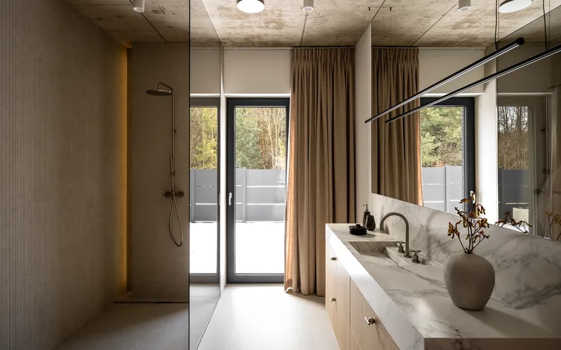

Nasza oferta
Wytrzymałe i piękne blaty kuchenne na wymiar z kamienia naturalnego i sztucznego

Kamienny blat kuchenny to połączenie funkcjonalności i dekoracyjnego charakteru, które doskonale wpisuje się zarówno w klasyczne, jak i nowoczesne aranżacje. Odpowiednio dobrany blat stanie się centralnym elementem kuchni, podkreślając jakość i styl całego wnętrza na lata.
Specjalizujemy się w produkcji blatów z granitu, marmuru, kwarcogranitu, kwarcytu i spieku kwarcowego. Każde zamówienie realizujemy indywidualnie — precyzyjnie dopasowujemy wymiary i pomagamy dobrać materiał idealnie harmonizujący z Twoimi meblami.

Pracownia Kamieniarska AMICO to miejsce, w którym tradycja kamieniarstwa spotyka się z wieloletnim doświadczeniem. Każdy blat kuchenny jest efektem ręcznej pracy wykwalifikowanych rzemieślników — ludzi, dla których kamień to nie tylko materiał, ale przede wszystkim pasja.
Nasze podejście do obróbki kamienia opiera się na wielopokoleniowej tradycji rzemiosła kamieniarskiego. Wiemy, jak zachowuje się granit pod narzędziem, jak reaguje marmur na polerowanie i jakie wymagania stawia kwarcyt podczas cięcia. Ta wiedza pozwala nam osiągać rezultaty, które zachwycają precyzją i estetyką wykonania.
Tworzymy blaty kuchenne, które idealnie odzwierciedlają Twój styl i charakter wnętrza — żaden detal nie jest przypadkowy.
Rodzaje kamienia

Jeden z najtwardszych kamieni naturalnych — odporny na zarysowania, wysokie temperatury i wilgoć. Idealny do intensywnie użytkowanej kuchni. Dostępny w szerokiej gamie kolorów — od głębokiej czerni po egzotyczne odcienie.
Symbol prestiżu i elegancji od wieków. Charakterystyczne żyłkowanie sprawia, że każdy blat jest dziełem natury. Doskonale komponuje się z klasycznymi i nowoczesnymi aranżacjami.
Łączy twardość zbliżoną do granitu z estetyką przypominającą marmur. Odporny na zarysowania, ścieranie i UV — zachowuje piękny wygląd przez dziesięciolecia. Występuje w spektakularnych odcieniach bieli, kremów, złota i błękitów.
Nowoczesne materiały o praktycznie zerowej porowatości — odporne na płyny, tłuszcze i kwasy. Nie wymagają impregnacji i są łatwe w utrzymaniu czystości. Dostępne w ogromnej palecie kolorów i wzorów.

Realizacja blatu kuchennego to starannie zaplanowany proces — od konsultacji i doboru materiału, przez precyzyjny pomiar u klienta, aż po ręczną obróbkę kamienia w naszej pracowni.
Na końcu przeprowadzamy profesjonalny montaż — dostarczamy gotowy blat i instalujemy go, dbając o idealne dopasowanie i estetykę połączeń. Cały proces jest prowadzony przez doświadczony zespół.
Precyzja, pasja i doświadczenie — to fundamenty, na których budujemy każdy kamienny blat w naszej pracowni.
Dlaczego warto
Zapraszamy do współpracy
Skontaktuj się z nami — doradzimy najlepsze rozwiązanie dla Twojego projektu. Oferujemy bezpłatną wycenę i profesjonalne doradztwo.
Skontaktuj się